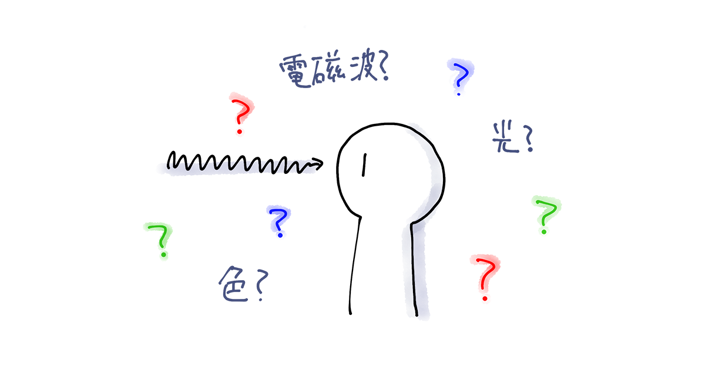
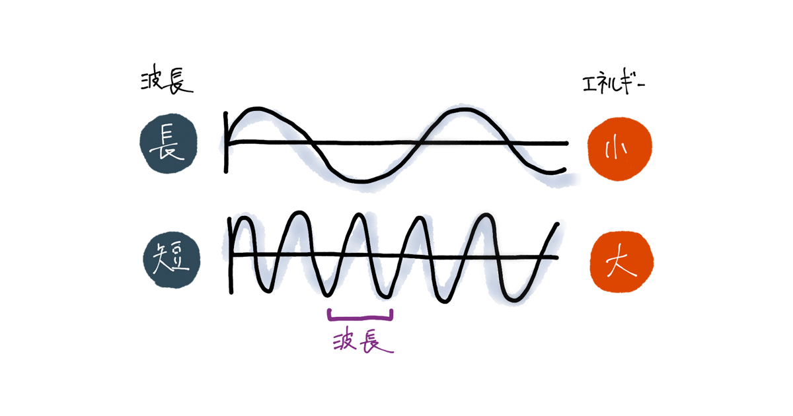
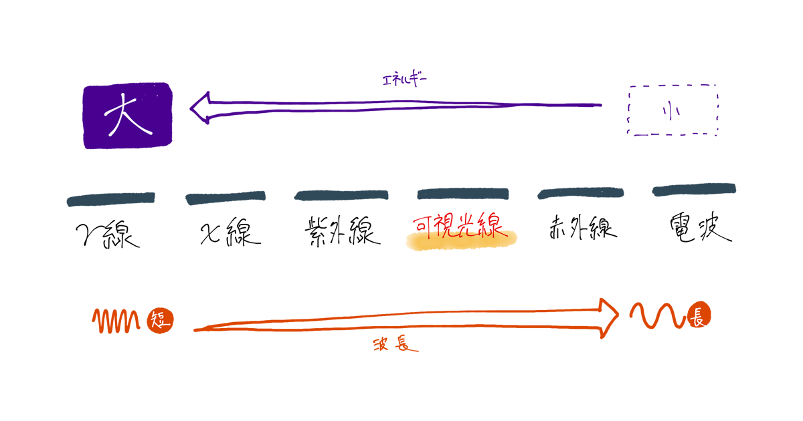
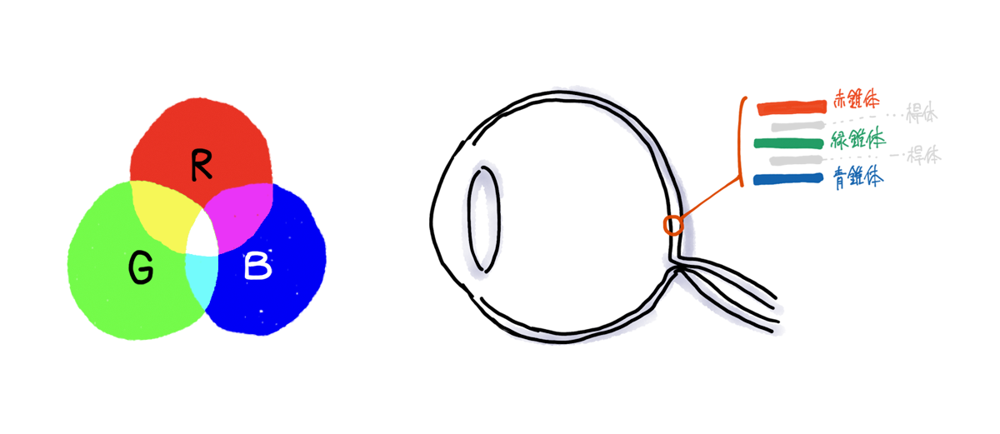
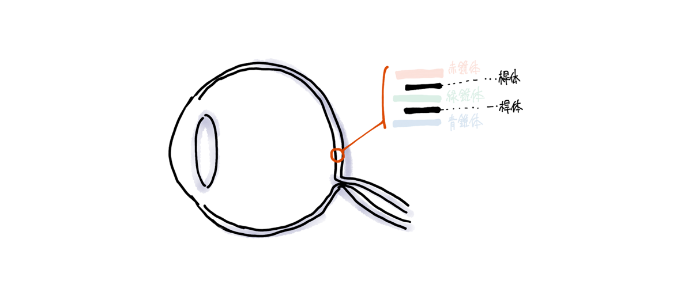

電磁波と光、色と視覚

人間は多くは視覚を持ち、眼球が光を捉え電気信号に変換し、脳に伝達し光景を識別する。ほとんどのその光景には「色」と呼ばれるものがついている。では光とは何か？色とは何か？
- 光とは可視光線と呼ばれる電磁波のうちのひとつである
- 光の三原色は人間にとっての話であり、受容細胞が三種類であることに由来
- 薄暗いと色が感じられなくなるのは受容細胞が切り替わるため
- 参考文献
- まとめ終えて
光とは可視光線と呼ばれる電磁波のうちのひとつである

まず、電磁波とは空間を伝わっていくエネルギー波のこと。波一つを波長という。電磁波は、波長の長さによっていくつかの種類がある。

そのうちの一つが「可視光線」と呼ばれる、人間の目に見える光にあたる。
- 波長が短い＝波の数が多くなることになり、エネルギーは大きくなる。
- 波長の長さによって、電磁波はガンマ（γ）線、X線、紫外線、可視光線、赤外線、電波に分けられる。
- 波長が長い電波などは、エネルギーも小さいため人体に影響はない。
- 赤外線の領域の波長になるとエネルギーも増え、体を温める程度の影響が出る。
- 人体からも電磁波は出ている。熱放射と呼ばれるもので、熱をもつ物質からは赤外線が放出されている。赤外線カメラを利用したサーモグラフィはこの原理を利用したものである。
- 可視光線の領域の波長になると、人間が識別できる光となる。
- 紫外線の領域の波長とエネルギーになると、肌に与えるエネルギーも大きくなり日焼けをする。
- X線やガンマ線の領域の波長になると、人間に深刻なダメージを与えるエネルギーを持つ。医療現場などで規制のもとで利用されている。
可視光線は、以下のような虹色をしている。可視光線の両極にある紫外線と赤外線は、それぞれ「可視光線の紫色の外側という意味で紫外線」「可視光線の赤色の外側という意味で赤外線」という名前の由来を持つ。
しかし、なぜ可視光線はこのような虹色をしているのだろう。そもそも色とは？
光の三原色は人間にとっての話であり、受容細胞が三種類であることに由来

色といえば赤・緑・青の「光の三原色（RGB）」。可視光線があのような虹色であるのはなぜか、それは人間の光の受容細胞が三種類存在するからである。色とは人間の知覚現象であり、「可視」光線というのも人間の視覚にとっての分類で、紫外線領域・赤外線領域の視覚を持つ生物は多数いると言われている。
人間の網膜上の光受容細胞は以下の三種類の錐体（すいたい）と、一種類の桿体（かんたい）があり、それぞれ光情報を神経系の信号に変換する。
- L錐体（赤）：長波長
- M錐体（緑）：中波長
- S錐体（青）：短波長
光の実態は電磁波であるが、三種類の錐体はそれぞれ長波長・中波長・短波長と反応する波長が異なり、その範囲で最大限反応するようにできている。可視光線の波長はさまざまな割合で合成されているので、三種類の錐体によってその波がキャッチされ、刺激として脳へ信号が送られて、脳が信号を組み合わせ、可視光線の色が認識される。波長によってL錐体とM錐体は興奮するが、S錐体は全く興奮しない、などと錐体の反応の差こそが、「色の組み合わせ」の正体であり、その組み合わせの種類こそが、可視光線があのような虹色である理由となる。
薄暗いと色が感じられなくなるのは受容細胞が切り替わるため

人間の網膜上の光受容細胞は以下の三種類の錐体（すいたい）と、一種類の桿体（かんたい）があり、それぞれ光情報を神経系の信号に変換する。
先ほどは錐体の話のみだったので、ここで桿体の話も織り交ぜて光受容細胞の話をする。
- 錐体
- ３種類あり色感受性を持つ。
- ただし感度が低いため十分な光量を必要とする。そのため暗い場所ではほぼ機能しない。
- 高い空間分解能をもつ神経回路に繋がっているため、物の形がはっきりと見える。
- 桿体
- 幅広い感受性幅を持ち、薄暗い場所で少ない光をキャッチする性能が高い。
- ただし桿体は一種類の光感受性色素しかもたないので、波長の違いを識別できない。つまり、色を知覚できない。
- また、感受性幅が広いため、明るい場所では桿体は飽和してしまい、桿体はほぼ機能しない。
- 桿体からつながる神経経路は空間的分解能が低いため、物の形がはっきりと見えなくなる。
錐体と桿体にはこのような役割分担がある。薄暗いと色が感じられなくなるのは、暗い場所では桿体が働き、そして桿体は一種類の光感受性色素しかもたない、よって色が感じられなくなる、が理由となる。
また、光量が少ないが暗闇でない、という中間的状況では錐体も桿体も両方機能する。
参考文献
- 加古 里子：宇宙 そのひろがりをしろう, 福音館書店, p.23, 1978.
- 矢口 博久：カラー画像工学の基礎と応用 (第1回) 視覚と色, テレビジョン学会誌 Vol.47, pp.68-76, 1993.
- 橘木 修志・河村 悟：暗所視と明所視の分子メカニズム−桿体と錐体の光応答特性を決める仕組みの探索−, 比較生理生化学 Vol.34, No.3, pp.70-79,2017.
- asagi：視覚特性、色が見える仕組みとは、錐体細胞による色の識別機能, 役に立つかもしれない情報, 2017.
- Photon：色が見える仕組み（１〜７）, 光と色と, 2009.
- るーいのゆっくり科学：【ゆっくり解説】電球はなぜ光るのか‐光とは何か‐, YouTube, 2020.
- スガツネ工業：電磁波の種類と可視光線
- ISEE 名古屋大学 宇宙地球環境研究所：9.人間からも電波が出る？ - 電波50のなぜ, 2020時点.
- 厚生労働省：医療分野における放射線の管理に関する現状, 医療放射線の適正管理に関する検討会, 2017.
- 電磁波, Wikipedia , 2020時点.
- 熱放射, Wikipedia , 2020時点.
- 赤外線, Wikipedia , 2020時点.
- 紫外線, Wikipedia , 2020時点.
- 可視光線, Wikipedia , 2020時点.
- 光, Wikipedia , 2020時点.
- 色, Wikipedia , 2020時点.
- 網膜, Wikipedia , 2020時点.
- 錐体細胞, Wikipedia , 2020時点.
- 桿体細胞, Wikipedia , 2020時点.
- RGB, Wikipedia , 2020時点.
- スペクトル, Wikipedia , 2020時点.
- 日本認知科学会：認知科学辞典, 共立出版, 2002.
- RGB表色系, p.14.
- 暗順応, p.18.
- 暗所視, p.18.
- 明順応, p.798.
- 明所視, pp.798-799.
- 色, p.41.
- 色感受性ニューロン, pp.41-42.
- 色対立型ニューロン, p.42.
まとめ終えて
光が電磁波のひとつであること、光の三原色が人間の仕様に基づいたものであること、なぜ薄暗くなると色がなくなるのかなど、これまで当たり前に触れてきた世界の仕組みについて学ぶことができた。原理を知ると、ものごとの繋がりが可視化されおもしろい。もっと人間のことが知りたい。
この記事はGMOペパボデザイナー Advent Calendar 2020の22日目の記事でした。明日はSUZURIのデザイナーでさらにイラストレーターでもある@tokufumi130238です。よろしく！